Components used for the experments
We need
1. Power source providing 5 volts.
2. 1 Leds with different colors.
3. 20k ohm potentiometer.
4. Toggle switches.
5. Resistors with different values, each value will be mentioned below.
6. Capacitors with different values.
7. NPN transistors.
8. LDR "Light Dependent Resistance".
9. Jumpers.
Experiment 1:
Q1 was to connect a circuit to light up a led which is pretty basic to achieve, the schematic is shown in the pic below
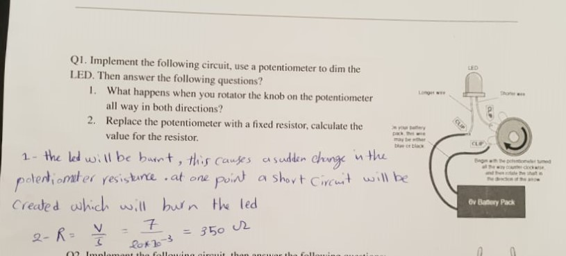We opened the data sheet of the diode and we saw that it takes about 2 volts and the current passing through it is about 20 milli amperes. This hepled us to figure the value of the resistance measured above.
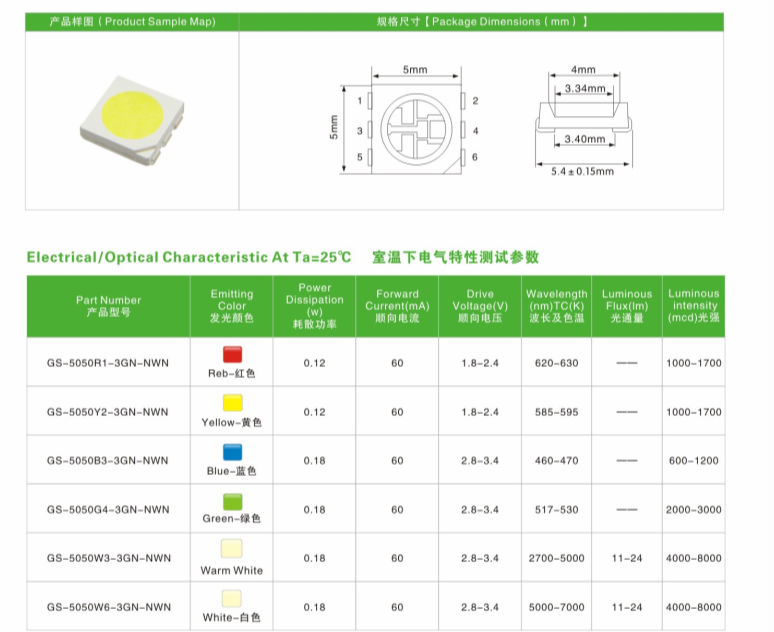The circuit connected using the real components is shown below
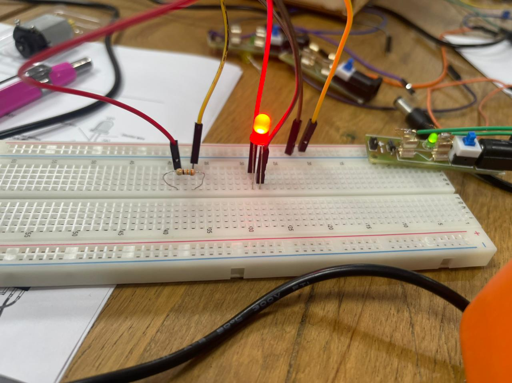Experiment 2:
The purpose of this experiment is to show that logic gates are based on the idea of switching. This circuit symbols the xor gate which has the following truth table. when both of the switches has the same signal the led will be turned off and the opposite is true.
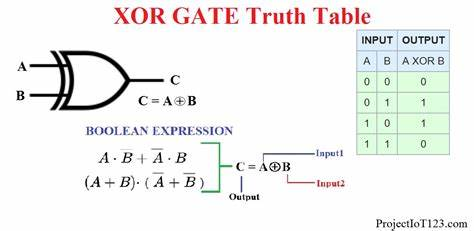The questions below help us to think about this cirsuit deeply so take a moment before reading the answer and try to anser them by yourself.

The circuit connected using the real components is shown below
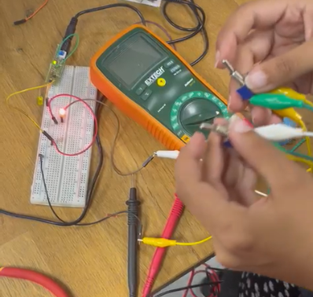Experiment 3:
In this experiment we will be using a capacitor so we need to catch a simple overview about capacitors in general. A capacitor is an electrical energy storage device that consists of two conductors that are isolated from one another and placed near to one another. A straightforward illustration of one such storage device is a parallel-plate capacitor. The capacitor is said to have a charge Q if positive charges totaling total charge +Q are deposited on one of the conductors and an equal amount of negative charges total charge Q are deposited on the second conductor.
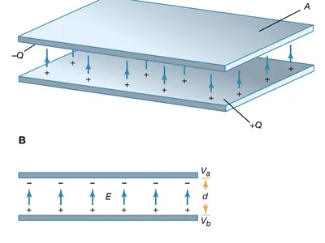When we apply a high voltage on the capacitor, it acts as a short circuit at the beginning "while charging", and acts as an open circuit when its fully charged. This experiment shows that capacitor behavior.
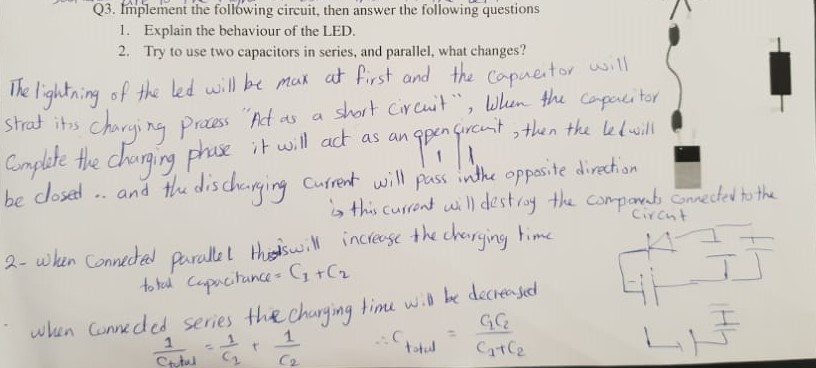Experiment 4:
We must know what are the is an LDR or a transistor before trying to implement them in an experiment.
A light dependent resistor, commonly referred to as a photoresistor or LDR, is a component whose resistance depends on the electromagnetic radiation that strikes it. As a result, they are light-sensitive technology. Other names for them include photoconductors, photoconductive cells, and just plain old photocells.
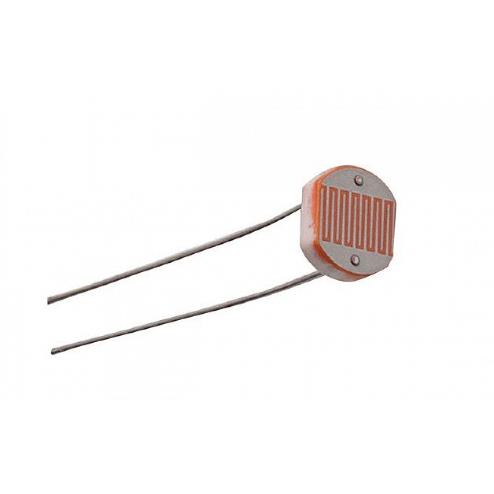The semiconductor device known as a transistor is used to switch or amplify electrical impulses. The transistor is one of the fundamental components of contemporary electronics. It has at least three terminals for connecting to an electronic circuit and is made of semiconductor material. The current flowing through another pair of the transistor's terminals is controlled by the voltage or current provided to one set of those terminals. A transistor can magnify a signal because the regulated (output) power can be greater than the controlling (input) power. Although many more transistors are found embedded in integrated circuits, some are packaged individually.
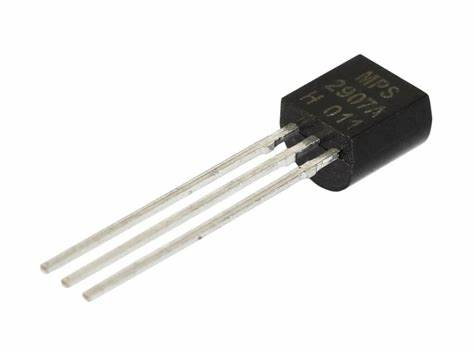This experiment shows how the vslur of the volage applied on the transistor base affects the output behavior.
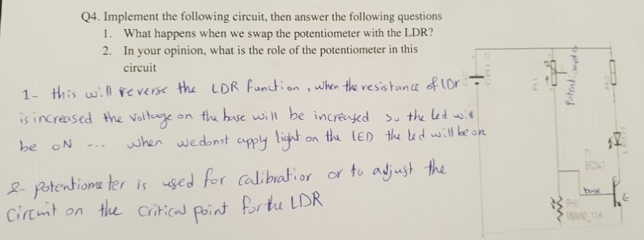The video for the experiment is shown here
Experiment 5:
Our human bodies has the ability to conduct electricity, wouldn't it be fun if we tested that?!
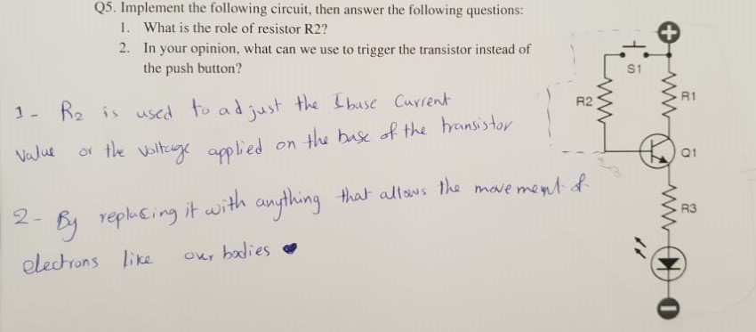Its amazing how our bodies can do the same function of the resistor used in the schematic. The electricity will literaly pass through our bodies and its mind blowing ! ^^
Experiment 6:
A periodic waveform is produced by electronic oscillation, which is a cyclical fluctuation in voltage or current that occurs repeatedly in an electrical circuit. The number of times the cycle repeats in a second is the oscillation's frequency, measured in hertz. The repetition could manifest as a fluctuating current or voltage.
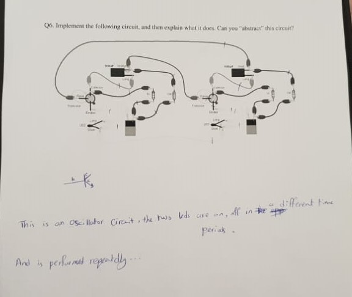The circuit is connected as asown in the following video